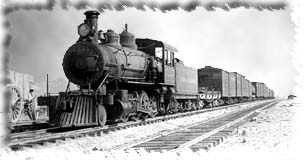
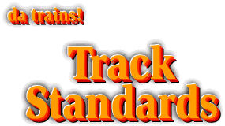

Track Standards - 97-07-30



These are the current SDSoNS club standards for track laying and maintenance.
They refer to code 40 hand laid track and turnouts for N scale. The techniques
described may be applicable to other scales such as HOn3 directly, and to other
scales in general.
There are also Code 40 turnout templates
with a bill of ties and instructions for hand laid turnouts.

San Diego Society Of N Scale
TRACK STANDARDS
[ layout ]
[ roadbed ]
[ track ]
[ ties ]
[ tie laying ]
[ soldering ]
[ feeder wires ]
[ turnouts ]
[ track maintenance ]
Track shall conform to NMRA standards for construction unless specifically stated herein. All track and turnouts shall be installed using the current version of the NMRA N scale gage.
Layout:
- Track layout shall be as decided by the Club and under the direction of the
Roadmaster.
- Any proposed changes from the track master plan shall be approved by
the Roadmaster prior to any centerline layouts.
- Major changes in the layout (affecting greater than 25% of the track plan)
need to be approved by a vote of the Club members at a business meeting.
- Placement of the trackage on the layout (in pencil) shall be approved by the
Roadmaster prior to any construction. Paint area with a base coat of latex paint
prior to centerline layout.
- Wiring and control panel requirements shall be coordinated with the
Electrical Foreman prior to any construction.
- Rails shall be laid so that the centerline of the trackage matches the
centerline of the ties.
- Minimum mainline radius is 24".
- Minimum passing siding radius is 24".
- Minimum radius for branchline tracks and other sidings is 12".
- Minimum distance between parallel tracks is 1 1/2".
- Straight tracks in industrial areas may be 1 1/4" apart.
- Minimum clearance from walls and other permanent fixtures shall be 2".
- Minimum distance between parallel tracks for narrow gage is 1".
- All curves shall have easement curves
leading into and out from the major radius, using cubic spirals. An
approximation can be used for the easement of an 1/8" offset to the centerline
for curves less than 24" radius and 1/16" offset for curves greater than 24"
radius.
- All vertical curves (changes in track elevation) shall be eased using parabolic
spirals or the natural flex of 3/4" plywood.
- Alternate direction curves ('S' curves) shall have a minimum of 8" straight
track between the starting points of the curves.
- Minimum turnout frog angle from the mainline is #8.
- Minimum turnout for yards, branchline tracks and spurs is #6.
- Minimum turnout for crossovers is #10.
Roadbed:
- Mainline roadbed shall be raised off the surrounding surface by 1/8", using
doorskin splines.
- Doorskin width is to be 1" (13.3 scale feet) minimum.
- Cut slots into doorskin to be used on curves, halfway through the width.
Space slots 2" on center, from alternate sides (spaced 1" from opposite side
cut).
- All track is to be laid on clean, smooth (sanded) surfaces. Fill in
irregularities with Bondo and sand smooth when dry. Especially check where two
flat surface pieces meet to assure that there are no dips in the surface.
Track:
- All visible track shall be Code 40 rail hand laid on wooden and PC (printed
circuit) ties.
- Hidden track shall be Code 55 Railcraft flex-track.
- Rail height used in turnouts shall match rail used on surrounding tracks.
- Changes from one track height to another shall be made using styrene shims
per club standards.
Ties:
- Ties shall be 1/32" x 1/16" basswood, stained and cut to standard lengths.
- Mainline ties shall be 9 scale feet in length.
- Narrow gage ties shall be cut to 6 scale feet.
- All other special lengths for turnouts, etc. shall be cut in one scale foot
increments.
- Each length of tie materials (wood & PC) shall be stored separately.
- Strips of ties shall be assembled in the Club jigs. Use the correct
jig for the type of trackage to be laid (mainline, yard, branchline, etc.).
- After the ties are in place, attach a strip of 1/4" maskng tape to the
centerline of the tie strip and remove from the jig. Make only enough tie strips
for your immediate needs. Tie strips must be used during that nights work
session. Tie strips that are not used shall be disassembled and ties stored back
in the appropriate containers.
- Every fifth tie shall be PC material, cut from Club stock.
- Where two lengths of rail meet, two PC ties shall be used together, each one
supporting the end of a rail section.
- Special track work shall have its own PC tie arrangement as needed.
Tie laying:
- Ties shall be laid onto the previously prepared and sanded roadbed using white
(or yellow) glue, thinned to a working consistency of approximately 50-50 water
and glue.
- Mask off the area on the roadbed that is to be balasted along with the
ties, approximately 1" wide on flat roadbed surfaces, and to edge of shoulder on
raised roadbed surfaces.
- Spread glue evenly onto the roadbed, and place tie strip onto the wet glue,
following the centerline of the track (or guidelines for the edges of the ties).
- Remove the masking tape strip using the club tool.
- Adjust tie placement for even spacing.
- Apply balast over the ties and the glue
surfaces approximately 1/4" deep.
- Let dry at least overnight.
- Adjacent tie strips to be applied next to any newly laid tie strip can be
applied only after the previous strip has dried overnight and the excess balast
removed.
- Tops of ties shall be sanded smooth using a sanding block prior to any rail
installation.
- Glue and balast is to be below the top surface of the ties.
- After all rail is laid in the section being worked on, cut between the PC
ties with a Dremel motortool and cutoff wheel. Cuts are to be made at the center
of the tie unless directed otherwise. Check for shorts with an Ohm meter.
Soldering:
- Soldering of rails and for turnout construction shall be as follows:
- All points to be soldered shall be cleaned and have flux applied to the
joint area.
- A small amount of solder is to be Œpicked up¹ on the soldering iron and
applied to the joint from the outside of the rails.
- No solder shall appear on the inside of the rails and the solder on the
outside shall be kept to a minimum (no big blobs).
- Heat both rail and PC tie so there is a good 'hot' joint between the two.
- Allow the flux to melt and carry the solder between the rail and PC tie.
- Remove excessive solder from the joint and all solder from the railheads
using soldering wick or desoldering equipment.
Feeder Wires:
- Two feeder wires shall be attached to each section of rail (no matter how
short), approximately 2-4" from each end.
- Feeders shall be red and white color coded. Color code is to match with
surrounding trackage.
- Use a hand drill for the holes for feeder wires through the roadbed (power
tools may 'jump' when they cut through the base material and the spinning chuck
can damage railhead surfaces.)
- Cut the hole between two ties adjacent to the outside edge of the rail.
- Feed the wire through the hole and trim off 1/4" of insulation. Bend wire
to fit to the rail.
- Tin the end of the wire with solder prior to attaching to the rail. Solder
to the rail (NOT to a PC tie) with a minimum of solder.
- No solder should appear on the top or inside surfaces of the rail.
Turnouts:
- The minimum turnout off of mainline track shall be #8.
- Ties shall be cut to the lengths described in the turnout tie list for
the type of turnout to be constructed (#6, #8, etc.) and assembled in the
appropriate Club jig.
- Frogs shall be cut so that there is a solid rail at the point of the frog
along the straight section of the turnout, with the rail for the turnout portion
dovetailed into the solid rail.
- Wide PC tie material shall be used for the turnout throwbar.
- Check all work with an NMRA Gage throughout construction.
- Point spacing and guardrail spacing are to conform to the gage standards.
- Test the turnout with a Kadee wheelset for smooth flow through the turnout.
- Turnout motors are PFM slow motion machines, mounted on separate wood block
mounts for modular installation.
- Wiring for the turnout is to follow Club standards.
- Spade lugs shall be attached to all wires leading from the switch
machine. Wires shall terminate at a terminal strip.
- All leads will be used for mainline turnouts.
- Yard, branchline, and industry sidings need only frog power wiring.
- After the turnout is wired, test for smooth operation with a variety of
types of motive power and rolling stock to assure good operation. Adjust as
necessary for optimum performance.
Track Maintenance:
- All work is to be directed and approved by the Track Foreman.
- The Roadmaster shall set up standard practices and patterns for
maintenance.
- The Track Foreman shall set up procedures and work schedules.
- The Track Foreman shall report progress or difficulties to the Roadmaster.
- Track and turnout crews will be separate.
- Work that is completed when the Track Foreman is not present shall be noted
on a SDSONS work form.
- Foreman shall initial work completed when the work has been checked and
approved.
- Trackage shall not be put into general service until it is approved.
- All existing turnouts shall be converted to the new tie arrangement, and
shall have wide PC throwbars.
- Marginal PC ties or PC ties that cannot hold solder shall be replaced.
- Joints to be resoldered shall be cleaned thoroughly, using lacquer thinner
and a 'Q-Tip'.
- Track that has been repaired shall be weathered to match surrounding
tracks.

If you have comments, suggestions on what you would like to see
or data you might like, you can email me at:
Rick Blanchard - rick@urbaneagle.com

--Back to da trains!--

--Back to da data.--

©1997 blanchard design, all rights reserved
Top photo courtesy Don Winslow. Used with permission.